What you need
- A Gmail account
- Google Cloud SDK installed on your local machine
What you'll learn
- Basics of Google Cloud
- How to set up and use Cloud SQL with a client
- Create and interact with your first GCS bucket using the UI and Command Line tool
- Create a Pubsub topic and subscription
- Create a Google Compute Engine instance
- Deploy an application in GCE
- Monitoring your application
Project
What is Project
A project organizes all your Google Cloud Platform resources. A project consists of a set of users; a set of APIs; and billing, authentication, and monitoring settings for those APIs. So, for example, all of your Cloud Storage buckets and objects, along with user permissions for accessing them, reside in a project. You can have one project, or you can create multiple projects.
Create a Project
If you don't already have a Google Account (Gmail or Google Apps), you must create one. Sign-in to Google Cloud Platform console (console.cloud.google.com) and create a new project:
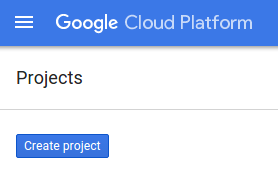
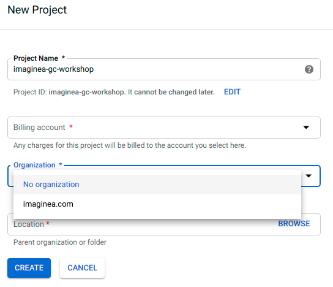
Remember the project ID, a unique name across all Google Cloud projects (the name above has already been taken and will not work for you, sorry!). It will be referred to later in this workshop as PROJECT_ID.
Enable Billing
Next, you'll need to enable billing in the Developers Console in order to use Google Cloud resources and enable the Compute Engine API.
New users of Google Cloud Platform are eligible for a $300 free trial.
Cloud Shell
Activate Google Cloud Shell
From the GCP Console click the Cloud Shell icon on the top right toolbar:
Then click "Start Cloud Shell":
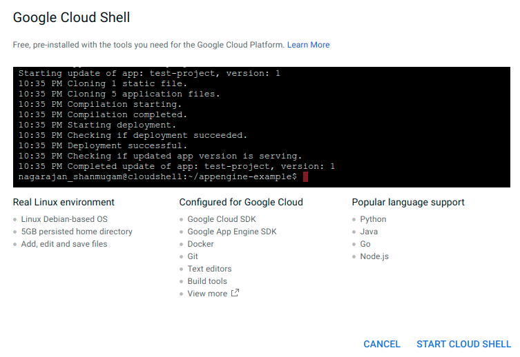
It should only take a few moments to provision and connect to the environment:
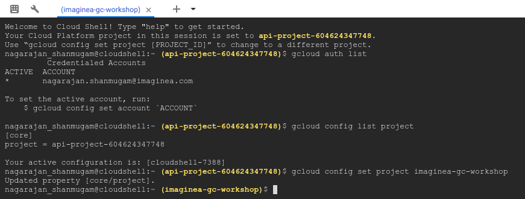
Once connected to the cloud shell, you should see that you are already authenticated and that the project is already set to your PROJECT_ID.
Run the following command in the cloud shell to confirm that you are authenticated:
gcloud auth list
Command output
Credentialed accounts: - <myaccount>@<mydomain>.com (active)
Run the following command in the cloud shell to list out the projects:
gcloud config list project
Command output
[core] project = <PROJECT_ID>
If it is not, you can set it with this command:
gcloud config set project <PROJECT_ID>
Google Cloud SDK
The Cloud SDK is a set of tools for Cloud Platform. It contains gcloud, gsutil, and bq, which you can use to access Compute Engine, Cloud Storage, BigQuery, and other products and services from the command-line. You can run these tools interactively or in your automated scripts.
What is RDBMS in GCP
RDBMS in GCP is a fully managed database service that makes it easy to set up, maintain, manage, and administer your relational databases in the cloud. Google Cloud SQL offers high performance, scalability, and convenience and it provides a database infrastructure for applications running anywhere. Google Cloud SQL Currently supports MySQL and POSTGRES.
Setting Up CloudSQL (Postgres)
Step 1
In the Google Cloud Console, click the Menu icon on the top left of the screen and Scroll down and select SQL in the Storage subsection.
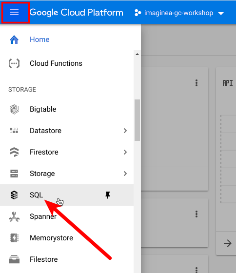
You should now see the Cloud SQL web UI, and assuming you are using a project that does not currently have any Cloud SQL instances, you will see a dialog box inviting you to create a new Cloud SQL instance.
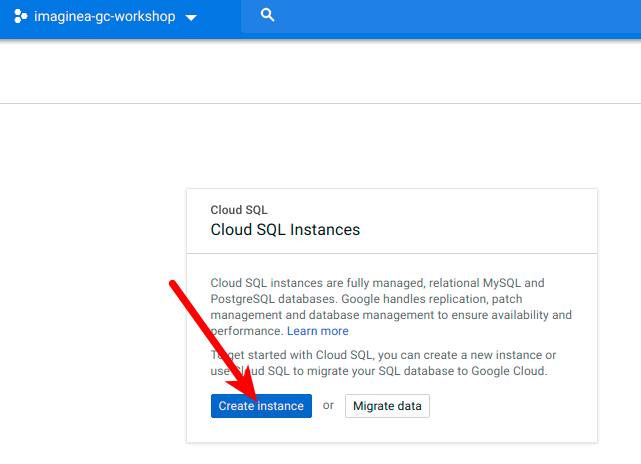
Step 2
Click Create Instance. Select Which database you want to use. Currently, It supports Only Mysql and PostgreSQL. This will take you to the Create an instance page.
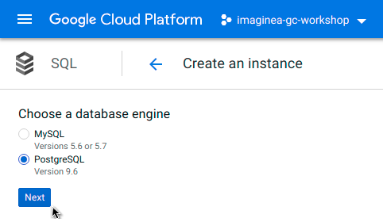
Step 3
Here you must specify a name for your instance. This name must be unique within your project. You have to configure the password for the admin user and database region.
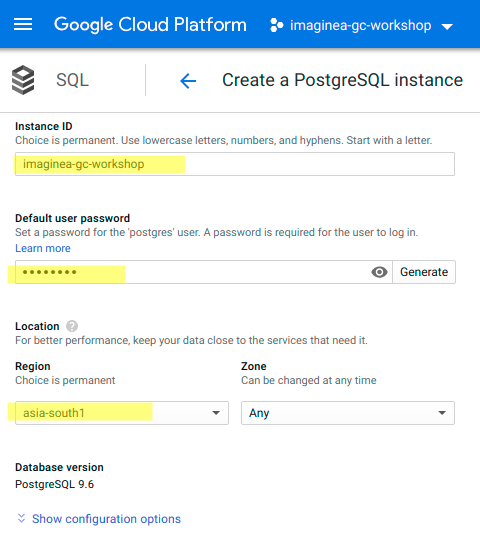
Additionally, you can configure the machine type and storage capacity and other database flags by clicking on show configuration options. Once you are done with
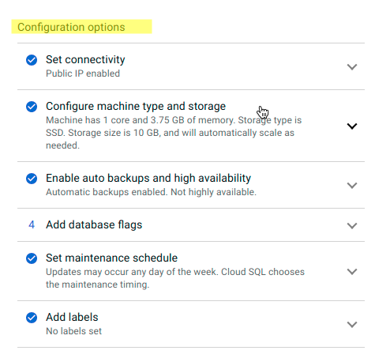
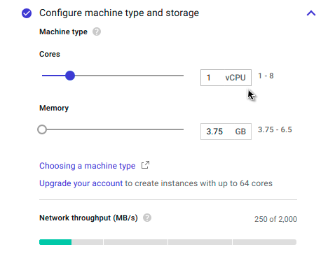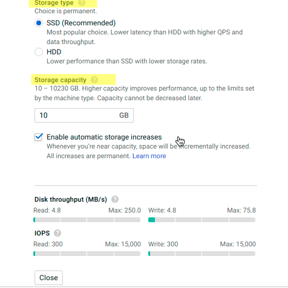
Click on Create.
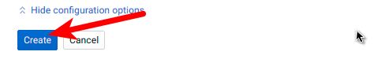
You will be taken to the Instances page, where you will see your new instance with a spinner on the left, indicating it is still being created:
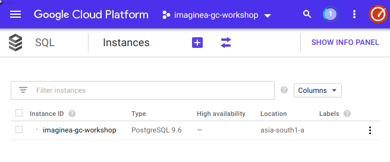
In two or three minutes, the instance will be available, and a green checkmark will replace the blue spinner. Make sure to refresh the page from time to time:
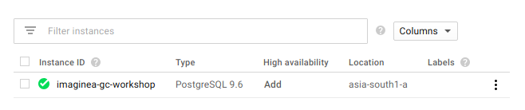
Your Cloud SQL instance is now ready to use.
Connection Options
Currently, there are 3 ways of connecting to Cloud SQL:
- Through Private IP Address on a VPC
- Through the Cloud SQL Proxy
- Through Public IP Address
Connection & Data Manipulation
Connection through Cloud Shell
Step 1
Activate Google Cloud Shell by pressing the prompt button in the Google Cloud Console.
Step 2
Connect to your Cloud SQL instance using the gcloud beta sql command shown below, but replace "imaginea-gc-workshop" with the name of your instance, if different and enter password
gcloud sql connect imaginea-gc-workshop --user=postgres
Command output
Whitelisting your IP for incoming connection for 5 minutes...done. Connecting to database with SQL user [postgres].Password for user postgres: psql (9.6.10, server 9.6.6) SSL connection (protocol: TLSv1.2, cipher: ECDHE-RSA-AES128-GCM-SHA256, bits: 128, compression: off) Type "help" for help. postgres=>
Run the following command in the cloud shell to create database
create database gc_demo;
Command output
CREATE DATABASE
Run the following command in the cloud shell to change database and enter the password in the prompt
\c gc_demo
Command output
CREATE DATABASE
Run the following commands to create and view tables.
# List available databases
\l
# List available tables
\dt
# List available schema in the connected database
\dn
CREATE TABLE guestbook (guestName VARCHAR(255), content VARCHAR(255), entryID SERIAL PRIMARY KEY);
INSERT INTO guestbook (guestName, content) values ('first guest', 'I got here!');
INSERT INTO guestbook (guestName, content) values ('second guest', 'Me too!');
SELECT * FROM guestbook;
Connection through Cloud SQL Proxy
The Cloud SQL Proxy is a secure way to connect to your Cloud SQL instance.
Step 1 - Install the Proxy
Download the Cloud SQL Proxy accordingly to your Operating System. In the following example we are using Linux 64-bit and make it executable with the following commands:
wget https://dl.google.com/cloudsql/cloud_sql_proxy.linux.amd64 -O cloud_sql_proxy chmod +x cloud_sql_proxy
Step 2 - Creating Service Account for use on the Proxy
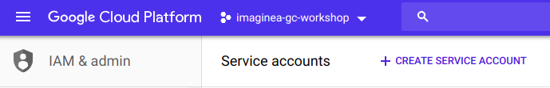
In the Create service account dialog, provide a descriptive name for the service account.
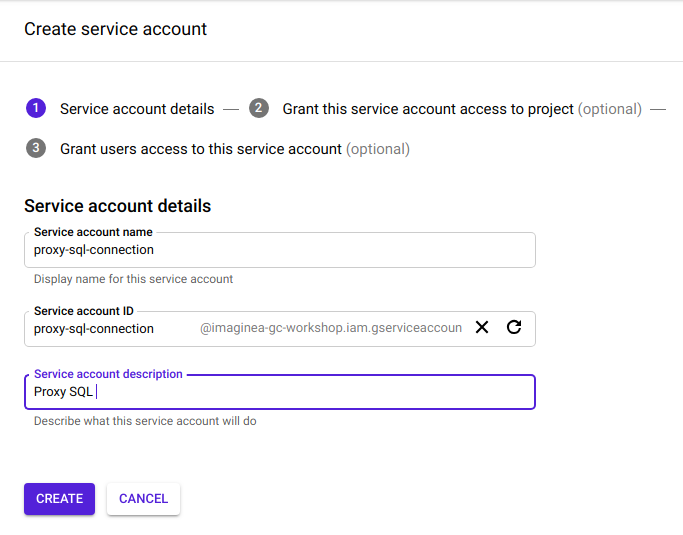
For Role, select one of the following roles:
- Cloud SQL > Cloud SQL Client
- Cloud SQL > Cloud SQL Editor
- Cloud SQL > Cloud SQL Admin
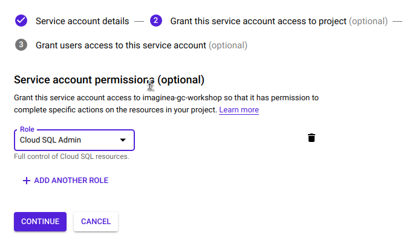
Click Create key and Choose JSON in the dialog. Click on create and download the JSON file. Keep the file Securely.
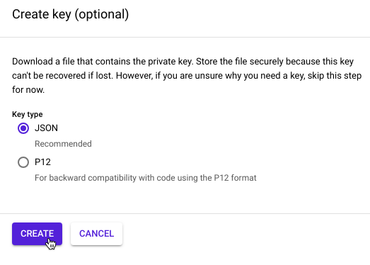
Click Create.
Step 3 - Start the proxy
Run the following command in your terminal to start the proxy.
./cloud_sql_proxy -instances=<INSTANCE_CONNECTION_NAME>=tcp:5432 \
-credential_file=<PATH_TO_KEY_FILE> &
Step 4 - Use PGAdmin to connect the proxy sql connection.
What is it?
Cloud Storage allows world-wide storage and retrieval of any amount of data at any time. You can use Cloud Storage for a range of scenarios including serving website content, storing data for archival and disaster recovery, or distributing large data objects to users via direct download.
Bucket Creation Using Console
Step 1
In the Google Cloud Console, click the Menu icon on the top left of the screen and Scroll down and select Storage > Browser in the Storage subsection

Step 2
Click on Create Bucket
Step 3
Name your bucket, it must be unique across all of GCP, not just your project. Then select Regional as the default storage class. Choose asia-south1 as your Region.
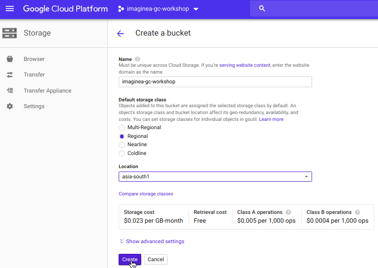
Step 4
You have now created your first bucket! Let's upload some files. You can upload whatever files you want to use.
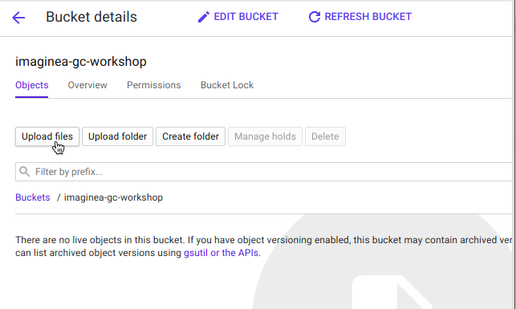
Step 5
You can Share your file with a specific user or Group or Public. By editing permission of the file you can do this.
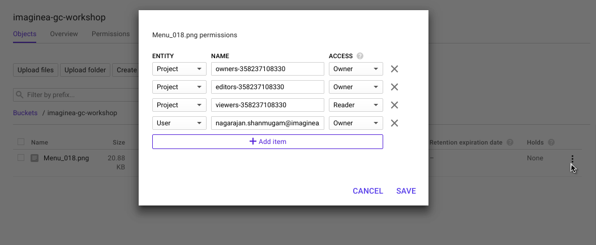
Create a second GCS bucket using the command line tool, gsutil
To create a second GCS bucket using the gsutil command use your local terminal environment with the GCP SDK installed, or use the Google Cloud Shell which has all of the SDK tools pre-installed.
Step 1
Open the Google Cloud Shell
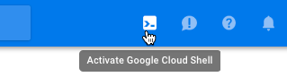
Step 2
Use gsutil to create a new regional bucket in asia-south1
Run the following command in cloud console to create the bucket.
gsutil mb -c regional -l asia-south1 gs://<Bucket Name> Bucket Creation
Step 3
Use the gsutil cp command to copy the image from the location where you saved it to the bucket you created
gsutil cp Desktop/kitten.png gs://<Bucket Name>
Step 4
Use the gsutil ls command to list the contents at the top level of your bucket:
gsutil ls gs://<Bucket Name>
Introduction
Messaging is a technology that enables high-speed, asynchronous, program-to-program communication with reliable delivery. Programs communicate by sending packets of data called messages to each other. Google Cloud Pub/Sub is a fully-managed real-time messaging service that allows you to send and receive messages between independent applications.
Create a topic and subscription Using Console
In the Google Cloud Console, click the Menu icon on the top left of the screen and Scroll down and select Pub/Sub in the Bigdata subsection

Click Enable API
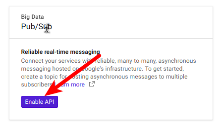
Click Create Topic
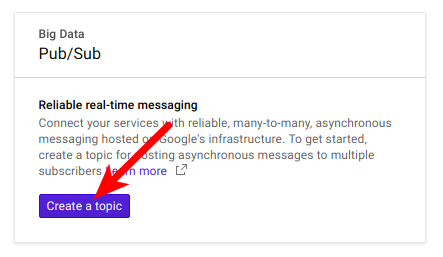
Type the name of the topic and then click Create.
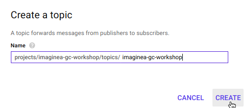
After the topic is created, remain on the Topics page. Look for the topic you just created, press the three vertical dots at the end of the line and click New Subscription.
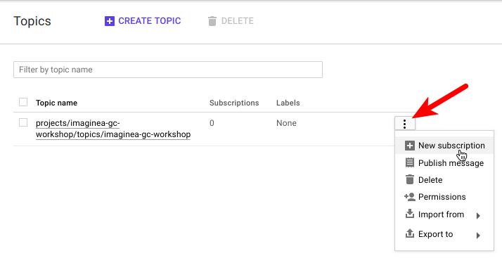
Type the subscription name in the text box and click Create.
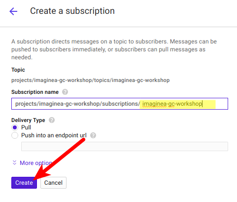
Create a topic and subscription Using Cloud Shell
From the te you just set up, create a topic.
gcloud pubsub topics create <Topic Name>
Create a subscription attached to this topic:
gcloud beta pubsub subscriptions create <Subscription Name> --topic <Topic Name>
Publish Message
In the Cloud Pub/Sub topics page, Look for the topic you just created, press the three vertical dots at the end of the line and click Publish Message
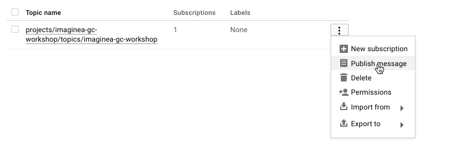
Enter Hello World in the Message field and Click Publish
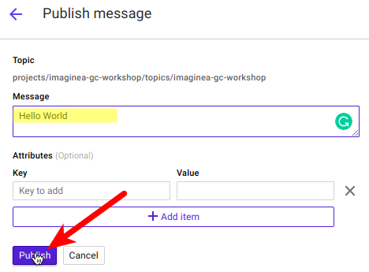
Pull Messages
Open the Cloud Shell and Enter the following
gcloud pubsub subscriptions pull --auto-ack <Subscription Name>
The message you sent appears in the DATA field of the command output.
┌─────────────┬─────────────────┬────────────┐ │ DATA │ MESSAGE_ID │ ATTRIBUTES │ ├─────────────┼─────────────────┼────────────┤ │ Hello World │ 287821426252241 │ │ └─────────────┴─────────────────┴────────────┘